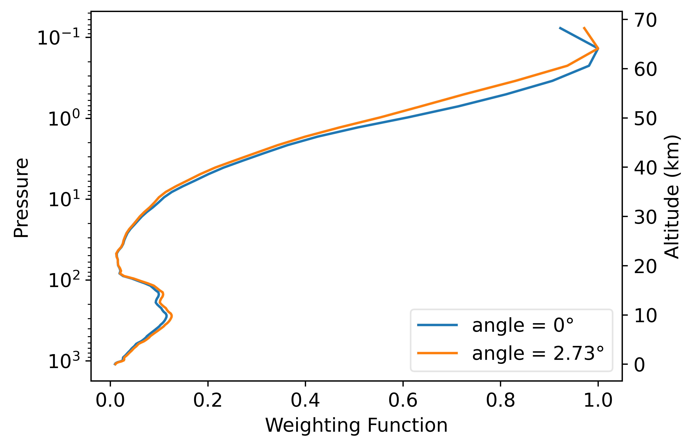
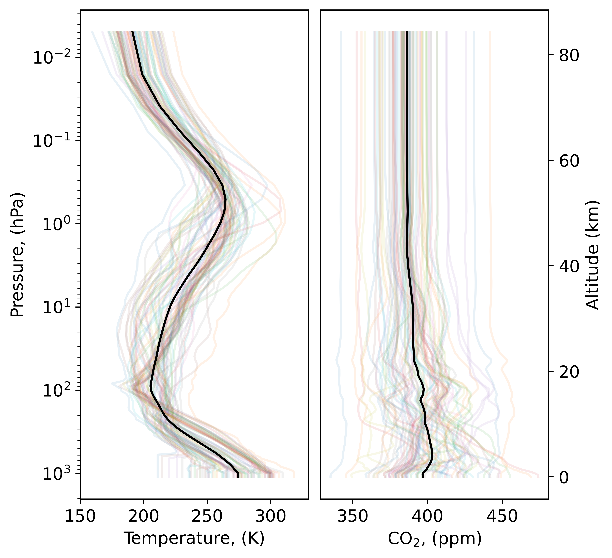

Updated radiative transfer modelling to simulate instruments from the 1970s
the Pressure Modulated Radiometer (PMR) and the Stratospheric Sounding Unit (SSU)
Valentin Jules, Jean-Marie Lalande, Jérôme Vidot
Copernicus Climate Change Service
Instrument of the 70s
Objectives
- Simulate the radiometer using LBLRTM
- Modelize the instrument measurement with RTTOV
- ERA-6 re analysis
PMR
Measurements principles

Spectral Response Function

Spectral Response Function
Weighting Functions Nadir, profil83

Weighting Functions Nadir, profil83
Weighting Functions Nadir, profil83

Doppler Scanning
\begin{equation}
\nu = \nu_e \left( 1 + \dfrac{v \cos(\theta)}{c} \right)
\end{equation}
\begin{equation}
\nu = \nu_e \left( 1 + \dfrac{v \cos(\pi/2 - \alpha)}{c} \right)
\end{equation}
\begin{equation}
\nu = \nu_e \left( 1 \pm \dfrac{v \sin(\alpha)}{c} \right)
\end{equation}
Doppler Scanning

Doppler Scanning

Doppler Scanning

Doppler Scanning

Doppler Scanning

Doppler Scanning

Doppler Scanning

Doppler Scanning
176 channels : 2 cells \(\times\) 88 angles
Peaks altitudes
Weighting Functions for different resolution

RTTOV profils

RTTOV Simulated Brightness Temperature

Observed Brightness Temperature
Simulated Weighting Functions

Simulated Weighting Functions


Simulated Weighting Functions
Simulated Weighting Functions

Simulated Weighting Functions

SSU
Spectral Response Function

SCR
Selective Chopper Radiometer

Measurements principles

Cell transmittance

Weighting Function

Spectral Response Function
Channel 1 (B1 - B2)

Weighting Functions


Weighting Functions

Weighting Functions
Weighting Functions
SRF
\begin{equation}
SRF = T_1 - T_2
\end{equation}
\begin{equation}
R_{1-2} = \dfrac{R_1 - f R_2}{1 - f}
\end{equation}
Conclusion
- We can use LBLRTM to simulate PMR
- PMR instrument probes in the upper stratosphere
- Doppler scanning must be taken into account
- Further investigations : Adjust atmospheric profiles